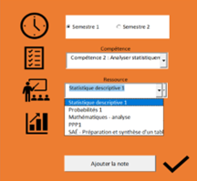
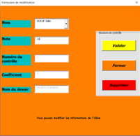
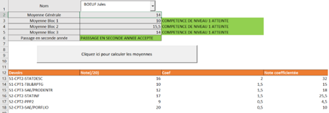

Building a reporting tool
I was put in charge, with a classmate, of designing a program in Excel VBA to track the evolution of a student's grades during our Degree. The app needed several features to work properly. The first was adding grades, sort by semester/skill area/course; the goal here was to learn how to use drop-down lists and update them based on the user's choices.
The second feature was the ability to edit a grade. There were several ways to make this possible, and we did it using a form that appeared when clicking on the grade needed to be changed.
The last feature was building a dashboard that calculates and shows the average grades of a student across the three main skills of our Degree, in order to show which skills they had gained and whether they would be accepted in the second year of the program.
Skills gained:
- Deepening my knowledge of Excel VBA
- Improving how I organize my work and work in a group
- Building an easy-to-use interface and a dashboard
- Building an interactive tool
Illustrations

Depending of the semester or the skill chosen, the drop-down list is automaticaly updated

The user can modify a grade, and also the student that the grade was assigned to

The user can also check which skills blocks the student has completed